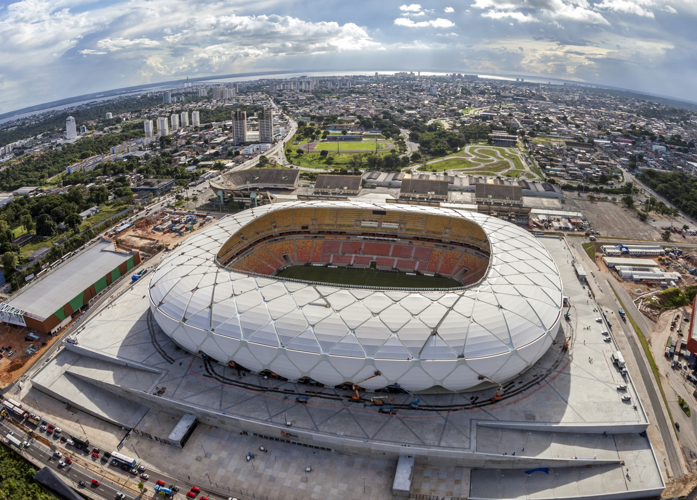

Un principio, esta Copa Mundial de la FIFA™ prometía ser especial. Al ser albergada por un país que ha llegado a representar lo mejor del fútbol, la 20ª edición de la máxima competición del deporte rey no podía ser como las demás. Y efectivamente, no defraudó a nadie. El Mundial de Brasil 2014 resultó extraordinario en muy diversos aspectos, con estadios abarrotados y un público apasionado que tuvo el placer de asistir a choques emocionantes, sorpresas y una cifra récord de goles.

QUE HACEMOS
La FIFA existe para gobernar el fútbol y desarrollar el juego en todo el mundo. Desde 2016, la organización ha evolucionado rápidamente hasta convertirse en un organismo que puede servir de manera más eficaz al fútbol en beneficio de todo el mundo. La nueva FIFA está modernizando el fútbol para que sea global, accesible e inclusivo en todos sus aspectos. No solo en uno o dos continentes, sino en todas partes. Bajo nuestra visión de hacer que el fútbol sea verdaderamente global, ayudaremos a desarrollar el fútbol en cualquier lugar para que haya al menos 50 selecciones nacionales y 50 clubes de todos los continentes que puedan competir al más alto nivel.
CIUDADES ANFITRIONAS

Belo Horizonte es la capital del estado de Minas Gerais, en el sureste de Brasil. Está rodeada de montañas y es conocida por el gran Estadio Mineirão. Este estadio, que se construyó en 1965, también alberga al Museo Brasileño de Fútbol. En las cercanías, se encuentra el lago Pampulha y el Complejo Arquitectónico Pampulha.
Brasilia, inaugurada como la capital de Brasil en 1960, es una ciudad planificada que se distingue por su arquitectura moderna blanca, cuyo diseño estuvo a cargo de Oscar Niemeyer. Se diseñó con la forma de un aeroplano y su “fuselaje” es el Eje Monumental, dos avenidas amplias que rodean un parque enorme. En la “cabina” está la Plaza de los Tres Poderes, llamada así por las tres ramas del gobierno que la rodean.

Curitiba es la capital del estado de Paraná en el sur de Brasil. Entre los elementos característicos de su perfil se incluye la Torre Panorámica, con un observatorio en la parte superior. Conocida como un centro cultural, Curitiba cuenta con una serie de escenarios artísticos, incluida la Ópera de Alambre, una estructura de acero tubular con un techo transparente, y el enorme Teatro Guaíra, con diversos programas.

Río de Janeiro es una enorme ciudad costera de Brasil, famosa por sus playas de Copacabana e Ipanema, la estatua del Cristo Redentor de 38 m de alto sobre el cerro del Corcovado y el morro Pan de Azúcar, una cima de granito con teleféricos que ascienden a su cima. La ciudad también es conocida por sus extensas favelas. El estridente festival del Carnaval, con desfiles de carros alegóricos, extravagantes disfraces y bailarines de samba, es considerado el más grande del mundo

São Paulo, el dinámico centro financiero de Brasil, se encuentra entre las ciudades más pobladas del mundo, con varias instituciones culturales y una rica tradición arquitectónica. Sus edificios icónicos varían desde su catedral neogótica y el rascacielos Edificio Martinelli de 1929 hasta el curvo Edificio Copan del arquitecto modernista Oscar Niemeyer.

Recife, la capital del estado de Pernambuco en el noreste de Brasil, se distingue por sus numerosos ríos, puentes, islotes y penínsulas. Recife Antigo, en su propia isla junto al puerto, es el centro de la ciudad antigua histórica que data del siglo XVI. Al sur, la playa Boa Viagem es resguardada por arrecifes y rodeada de altos bloques de departamentos, modernos hoteles y restaurantes.
El Salvador es una pequeña nación de América Central. Es conocida por sus playas en el océano Pacífico, los sitios de surf y el paisaje montañoso. Su Ruta de las Flores es un camino serpenteante que pasa por plantaciones de café, bosques tropicales con cascadas y ciudades como Juayúa, con sus festivales gastronómicos cada fin de semana, junto con Ataco, donde hay alegres murales. La capital, San Salvador, con volcanes como un espectacular telón de fondo, tiene varios museos y el Teatro Nacional.
Manaos, en las orillas del río Negro en el noroeste de Brasil, es la capital del extenso estado de Amazonas. Es el punto de partida principal para el bosque tropical circundante del Amazonas. Justo al este de la ciudad, el oscuro río Negro converge con el río Solimões lodoso y de color café, lo que genera un increíble fenómeno visual llamado el "Encuentro de las Aguas". Los afluentes combinados forman el río Amazonas.
PATROCINADORES

GRUPO MUNDIAL 2014
RESULTADOS DEL MUNDIAL DEL 2014
ESTADIOS
El Estadio Mineirão es un estadio deportivo ubicado en la ciudad brasileña de Belo Horizonte, capital del estado de Minas Gerais. En este estadio hace de local Cruzeiro, además fue sede del Mundial de Brasil 2014. Hasta la temporada 2022, el Atlético Mineiro también disputó sus partidos en el estadio

El Estadio Nacional Julio Martínez Prádanos es el principal recinto deportivo de Chile, ubicado en el Parque deportivo Estadio Nacional, un complejo deportivo multidisciplinario con una extensión de cerca de 64 hectáreas, en la comuna de Ñuñoa en la ciudad de Santiago.
El estadio es uno de los más antiguos de Brasil construido en 1914. Su inauguración tuvo lugar con ocasión de un partido entre Athletico Paranaense y Flamengo de Río.

El Arena da Amazônia Está situado en el barrio de Flores y fue construido en el mismo lugar que antes ocupaba el Estadio Vivaldão, para ser utilizado como una de las 12 sedes de la Copa Mundial de la FIFA en 2014 siendo inaugurado el 9 de marzo de 2014. es un estadio de fútbol de la ciudad de Manaos, capital del estado de Amazonas, Brasil.

estadio multiusos de la ciudad de Recife, capital del estado de Pernambuco, en Brasil. El estadio fue inaugurado en 2013 y se utiliza, principalmente, para la práctica del fútbol

El Estadio de Maracaná, formalmente Estadio Jornalista Mário Filho, es un estadio de fútbol ubicado en la ciudad de Río de Janeiro, Brasil. Su dirección es Rua Professor Eurico Rabelo, s/n.º, portão 18, Maracanã. Es el estadio más grande de Brasil y fue el más grande del mundo durante mucho tiempo

El Itaipava Arena Fonte Nova, también conocido como Complexo Esportivo Cultural Profesor Octávio Mangabeira, es un estadio de fútbol en la ciudad brasileña de Salvador, de propiedad del gobierno del estado de Bahía y que es utilizado por el Bahia y en ocasiones por el Vitória.

El Neo Química Arena es un estadio deportivo ubicado en la ciudad brasileña de São Paulo más precisamente en el distrito de Itaquera, en la parte este de la ciudad. Es propiedad del S.C. Corinthians Paulista.El estadio tiene una capacidad para 49 205 espectadores.